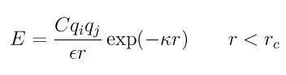
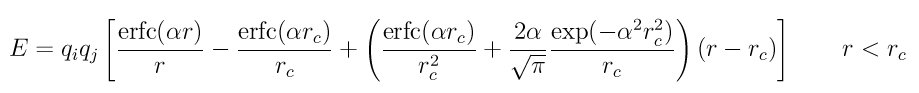

pair_style lj/cut command¶
pair_style lj/cut/cuda command¶
pair_style lj/cut/gpu command¶
pair_style lj/cut/intel command¶
pair_style lj/cut/kk command¶
pair_style lj/cut/opt command¶
pair_style lj/cut/omp command¶
pair_style lj/cut/coul/cut command¶
pair_style lj/cut/coul/cut/cuda command¶
pair_style lj/cut/coul/cut/gpu command¶
pair_style lj/cut/coul/cut/omp command¶
pair_style lj/cut/coul/debye command¶
pair_style lj/cut/coul/debye/cuda command¶
pair_style lj/cut/coul/debye/gpu command¶
pair_style lj/cut/coul/debye/kk command¶
pair_style lj/cut/coul/debye/omp command¶
pair_style lj/cut/coul/dsf command¶
pair_style lj/cut/coul/dsf/gpu command¶
pair_style lj/cut/coul/dsf/kk command¶
pair_style lj/cut/coul/dsf/omp command¶
pair_style lj/cut/coul/long command¶
pair_style lj/cut/coul/long/cs command¶
pair_style lj/cut/coul/long/cuda command¶
pair_style lj/cut/coul/long/gpu command¶
pair_style lj/cut/coul/long/intel command¶
pair_style lj/cut/coul/long/opt command¶
pair_style lj/cut/coul/long/omp command¶
pair_style lj/cut/coul/msm command¶
pair_style lj/cut/coul/msm/gpu command¶
pair_style lj/cut/coul/msm/omp command¶
pair_style lj/cut/tip4p/cut command¶
pair_style lj/cut/tip4p/cut/omp command¶
pair_style lj/cut/tip4p/long command¶
pair_style lj/cut/tip4p/long/omp command¶
pair_style lj/cut/tip4p/long/opt command¶
Syntax¶
pair_style style args
- style = lj/cut or lj/cut/coul/cut or lj/cut/coul/debye or lj/cut/coul/dsf or lj/cut/coul/long or lj/cut/coul/long/cs or lj/cut/coul/msm or lj/cut/tip4p/long
- args = list of arguments for a particular style
lj/cut args = cutoff cutoff = global cutoff for Lennard Jones interactions (distance units) lj/cut/coul/cut args = cutoff (cutoff2) cutoff = global cutoff for LJ (and Coulombic if only 1 arg) (distance units) cutoff2 = global cutoff for Coulombic (optional) (distance units) lj/cut/coul/debye args = kappa cutoff (cutoff2) kappa = inverse of the Debye length (inverse distance units) cutoff = global cutoff for LJ (and Coulombic if only 1 arg) (distance units) cutoff2 = global cutoff for Coulombic (optional) (distance units) lj/cut/coul/dsf args = alpha cutoff (cutoff2) alpha = damping parameter (inverse distance units) cutoff = global cutoff for LJ (and Coulombic if only 1 arg) (distance units) cutoff2 = global cutoff for Coulombic (distance units) lj/cut/coul/long args = cutoff (cutoff2) cutoff = global cutoff for LJ (and Coulombic if only 1 arg) (distance units) cutoff2 = global cutoff for Coulombic (optional) (distance units) lj/cut/coul/msm args = cutoff (cutoff2) cutoff = global cutoff for LJ (and Coulombic if only 1 arg) (distance units) cutoff2 = global cutoff for Coulombic (optional) (distance units) lj/cut/tip4p/cut args = otype htype btype atype qdist cutoff (cutoff2) otype,htype = atom types for TIP4P O and H btype,atype = bond and angle types for TIP4P waters qdist = distance from O atom to massless charge (distance units) cutoff = global cutoff for LJ (and Coulombic if only 1 arg) (distance units) cutoff2 = global cutoff for Coulombic (optional) (distance units) lj/cut/tip4p/long args = otype htype btype atype qdist cutoff (cutoff2) otype,htype = atom types for TIP4P O and H btype,atype = bond and angle types for TIP4P waters qdist = distance from O atom to massless charge (distance units) cutoff = global cutoff for LJ (and Coulombic if only 1 arg) (distance units) cutoff2 = global cutoff for Coulombic (optional) (distance units)
Examples¶
pair_style lj/cut 2.5
pair_coeff * * 1 1
pair_coeff 1 1 1 1.1 2.8
pair_style lj/cut/coul/cut 10.0
pair_style lj/cut/coul/cut 10.0 8.0
pair_coeff * * 100.0 3.0
pair_coeff 1 1 100.0 3.5 9.0
pair_coeff 1 1 100.0 3.5 9.0 9.0
pair_style lj/cut/coul/debye 1.5 3.0
pair_style lj/cut/coul/debye 1.5 2.5 5.0
pair_coeff * * 1.0 1.0
pair_coeff 1 1 1.0 1.5 2.5
pair_coeff 1 1 1.0 1.5 2.5 5.0
pair_style lj/cut/coul/dsf 0.05 2.5 10.0
pair_coeff * * 1.0 1.0
pair_coeff 1 1 1.0 1.0 2.5
pair_style lj/cut/coul/long 10.0
pair_style lj/cut/coul/long/cs 10.0
pair_style lj/cut/coul/long 10.0 8.0
pair_style lj/cut/coul/long/cs 10.0 8.0
pair_coeff * * 100.0 3.0
pair_coeff 1 1 100.0 3.5 9.0
pair_style lj/cut/coul/msm 10.0
pair_style lj/cut/coul/msm 10.0 8.0
pair_coeff * * 100.0 3.0
pair_coeff 1 1 100.0 3.5 9.0
pair_style lj/cut/tip4p/cut 1 2 7 8 0.15 12.0
pair_style lj/cut/tip4p/cut 1 2 7 8 0.15 12.0 10.0
pair_coeff * * 100.0 3.0
pair_coeff 1 1 100.0 3.5 9.0
pair_style lj/cut/tip4p/long 1 2 7 8 0.15 12.0
pair_style lj/cut/tip4p/long 1 2 7 8 0.15 12.0 10.0
pair_coeff * * 100.0 3.0
pair_coeff 1 1 100.0 3.5 9.0
Description¶
The lj/cut styles compute the standard 12/6 Lennard-Jones potential, given by

Rc is the cutoff.
Style lj/cut/coul/cut adds a Coulombic pairwise interaction given by

where C is an energy-conversion constant, Qi and Qj are the charges on the 2 atoms, and epsilon is the dielectric constant which can be set by the dielectric command. If one cutoff is specified in the pair_style command, it is used for both the LJ and Coulombic terms. If two cutoffs are specified, they are used as cutoffs for the LJ and Coulombic terms respectively.
Style lj/cut/coul/debye adds an additional exp() damping factor to the Coulombic term, given by
where kappa is the inverse of the Debye length. This potential is another way to mimic the screening effect of a polar solvent.
Style lj/cut/coul/dsf computes the Coulombic term via the damped shifted force model described in Fennell, given by:
where alpha is the damping parameter and erfc() is the complementary error-function. This potential is essentially a short-range, spherically-truncated, charge-neutralized, shifted, pairwise 1/r summation. The potential is based on Wolf summation, proposed as an alternative to Ewald summation for condensed phase systems where charge screening causes electrostatic interactions to become effectively short-ranged. In order for the electrostatic sum to be absolutely convergent, charge neutralization within the cutoff radius is enforced by shifting the potential through placement of image charges on the cutoff sphere. Convergence can often be improved by setting alpha to a small non-zero value.
Styles lj/cut/coul/long and lj/cut/coul/msm compute the same Coulombic interactions as style lj/cut/coul/cut except that an additional damping factor is applied to the Coulombic term so it can be used in conjunction with the kspace_style command and its ewald or pppm option. The Coulombic cutoff specified for this style means that pairwise interactions within this distance are computed directly; interactions outside that distance are computed in reciprocal space.
Style lj/cut/coul/long/cs is identical to lj/cut/coul/long except that a term is added for the core/shell model to allow charges on core and shell particles to be separated by r = 0.0.
Styles lj/cut/tip4p/cut and lj/cut/tip4p/long implement the TIP4P water model of (Jorgensen), which introduces a massless site located a short distance away from the oxygen atom along the bisector of the HOH angle. The atomic types of the oxygen and hydrogen atoms, the bond and angle types for OH and HOH interactions, and the distance to the massless charge site are specified as pair_style arguments. Style lj/cut/tip4p/cut uses a cutoff for Coulomb interactions; style lj/cut/tip4p/long is for use with a long-range Coulombic solver (Ewald or PPPM).
Note
For each TIP4P water molecule in your system, the atom IDs for the O and 2 H atoms must be consecutive, with the O atom first. This is to enable LAMMPS to “find” the 2 H atoms associated with each O atom. For example, if the atom ID of an O atom in a TIP4P water molecule is 500, then its 2 H atoms must have IDs 501 and 502.
See the howto section for more information on how to use the TIP4P pair styles and lists of parameters to set. Note that the neighobr list cutoff for Coulomb interactions is effectively extended by a distance 2*qdist when using the TIP4P pair style, to account for the offset distance of the fictitious charges on O atoms in water molecules. Thus it is typically best in an efficiency sense to use a LJ cutoff >= Coulomb cutoff + 2*qdist, to shrink the size of the neighbor list. This leads to slightly larger cost for the long-range calculation, so you can test the trade-off for your model.
For all of the lj/cut pair styles, the following coefficients must be defined for each pair of atoms types via the pair_coeff command as in the examples above, or in the data file or restart files read by the read_data or read_restart commands, or by mixing as described below:
- epsilon (energy units)
- sigma (distance units)
- cutoff1 (distance units)
- cutoff2 (distance units)
Note that sigma is defined in the LJ formula as the zero-crossing distance for the potential, not as the energy minimum at 2^(1/6) sigma.
The latter 2 coefficients are optional. If not specified, the global LJ and Coulombic cutoffs specified in the pair_style command are used. If only one cutoff is specified, it is used as the cutoff for both LJ and Coulombic interactions for this type pair. If both coefficients are specified, they are used as the LJ and Coulombic cutoffs for this type pair. You cannot specify 2 cutoffs for style lj/cut, since it has no Coulombic terms.
For lj/cut/coul/long and lj/cut/coul/msm and lj/cut/tip4p/cut and lj/cut/tip4p/long only the LJ cutoff can be specified since a Coulombic cutoff cannot be specified for an individual I,J type pair. All type pairs use the same global Coulombic cutoff specified in the pair_style command.
Styles with a cuda, gpu, intel, kk, omp, or opt suffix are functionally the same as the corresponding style without the suffix. They have been optimized to run faster, depending on your available hardware, as discussed in Section_accelerate of the manual. The accelerated styles take the same arguments and should produce the same results, except for round-off and precision issues.
These accelerated styles are part of the USER-CUDA, GPU, USER-INTEL, KOKKOS, USER-OMP and OPT packages, respectively. They are only enabled if LAMMPS was built with those packages. See the Making LAMMPS section for more info.
You can specify the accelerated styles explicitly in your input script by including their suffix, or you can use the -suffix command-line switch when you invoke LAMMPS, or you can use the suffix command in your input script.
See Section_accelerate of the manual for more instructions on how to use the accelerated styles effectively.
Mixing, shift, table, tail correction, restart, rRESPA info:
For atom type pairs I,J and I != J, the epsilon and sigma coefficients and cutoff distance for all of the lj/cut pair styles can be mixed. The default mix value is geometric. See the “pair_modify” command for details.
All of the lj/cut pair styles support the pair_modify shift option for the energy of the Lennard-Jones portion of the pair interaction.
The lj/cut/coul/long and lj/cut/tip4p/long pair styles support the pair_modify table option since they can tabulate the short-range portion of the long-range Coulombic interaction.
All of the lj/cut pair styles support the pair_modify tail option for adding a long-range tail correction to the energy and pressure for the Lennard-Jones portion of the pair interaction.
All of the lj/cut pair styles write their information to binary restart files, so pair_style and pair_coeff commands do not need to be specified in an input script that reads a restart file.
The lj/cut and lj/cut/coul/long pair styles support the use of the inner, middle, and outer keywords of the run_style respa command, meaning the pairwise forces can be partitioned by distance at different levels of the rRESPA hierarchy. The other styles only support the pair keyword of run_style respa. See the run_style command for details.
Restrictions¶
The lj/cut/coul/long and lj/cut/tip4p/long styles are part of the KSPACE package. The lj/cut/tip4p/cut style is part of the MOLECULE package. These styles are only enabled if LAMMPS was built with those packages. See the Making LAMMPS section for more info. Note that the KSPACE and MOLECULE packages are installed by default.